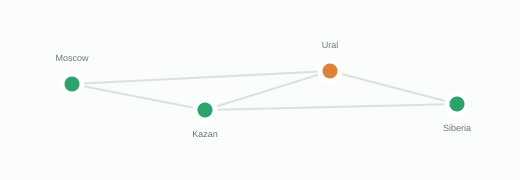

за последние 90 дней
Состояние платформы
Публичные показатели доступности и история обслуживания
работают штатно
среднее восстановление 11 мин
контроль из независимых точек
Задержка публичного API
Медиана и 95-й перцентиль по всем регионам
400 мс300 мс200 мс100 мс0
00:0004:0008:0012:0014:00
Точки наблюдения
Внешние проверки доступности

Москва 42 мсКазань 58 мсЕкатеринбург 91 мсНовосибирск 104 мс
Компоненты платформы
Доступность за выбранный период и текущий ответ
КОМПОНЕНТСОСТОЯНИЕДОСТУПНОСТЬОТВЕТ90 ДНЕЙ
Компоненты по этому запросу не найдены.
История инцидентов
Подтверждённые события за 90 дней
УСТРАНЁН
Задержка доставки событий в регионе Урал
Часть вебхуков доставлялась с задержкой до 11 минут. Очередь обработана полностью, потери событий не зафиксированы.
Продолжительность 23 минуты · опубликовано 4 обновленияУСТРАНЁН
Ошибки загрузки файлов крупнее 500 МБ
Повторные загрузки могли завершаться ошибкой контрольной суммы. Исправление развёрнуто во всех точках.
Продолжительность 17 минут · опубликовано 3 обновленияБЕЗ ИНЦИДЕНТОВ
Системы работают в пределах целевых показателей
Незапланированных перерывов и деградаций за последние 24 часа не зарегистрировано.
ПРОЗРАЧНОСТЬ
Как мы считаем доступность
Показатели строятся по внешним проверкам из четырёх регионов. Плановые окна исключаются только после предварительной публикации на этой странице.
- Период хранения
- 24 месяца
- Частота проверки
- 30 секунд
- Целевой SLO
- 99,95%